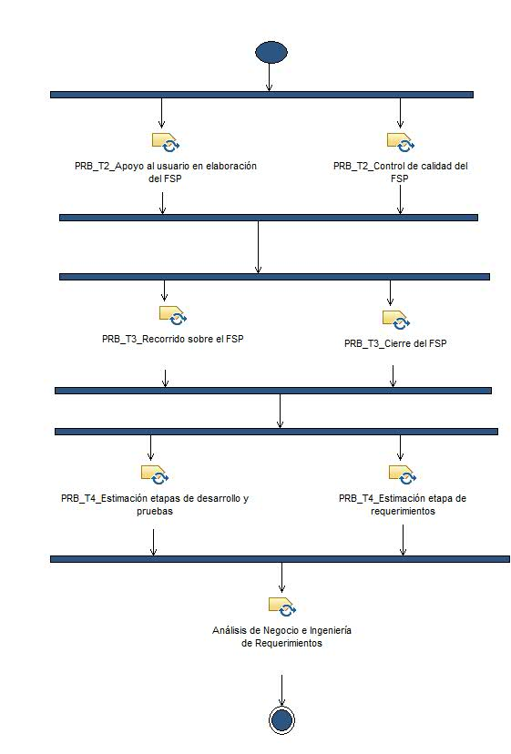

| Patrón de posibilidad: Gestión de Solicitudes en el PRB |
 |
|
| Descripción | Estructura de desglose de trabajo | Asignación de equipos | Utilización del producto de trabajo | ||||||
Flujo de trabajo
|  |
Anomalía del trabajo
Flujo de trabajo
Anomalía del trabajo
|
|||||||||||||||||||||||||||||||||||||||